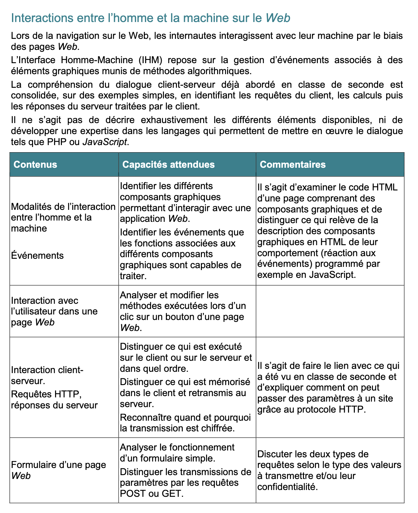
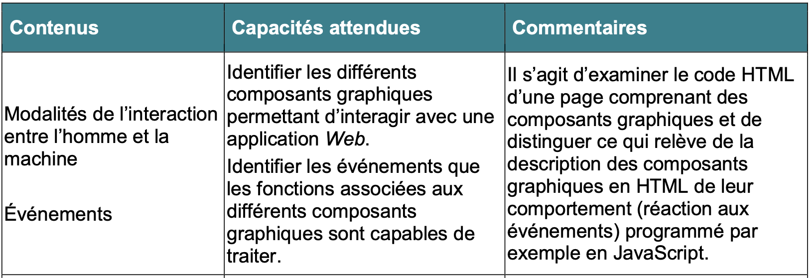
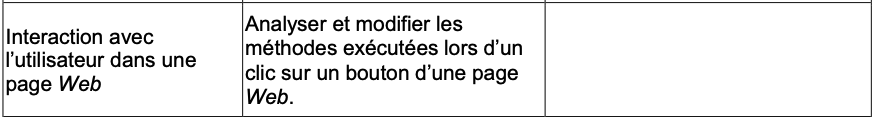
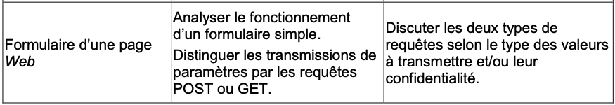

Présentation DIU : Les formulaires en HTML
Jenny Alkhoury ; Emmanuel Maurat ; Jean-Luc Rullière
1. APPROCHE GÉNÉRALE
1.1. Positionnement dans le programme
Le programme de première en NSI se compose de sept thématiques dont, en quatrième position, L'interaction homme–machine sur le WEB. Cette thématique, en copie ci-dessous, se divise en quatre sous-thèmes dont celui qui nous intéresse : Formulaires d'une page WEB. On peut considérer que la thématique L'interaction homme–machine sur le WEB, qui est assez riche comparativement à d'autres, représente environ un cinquième du programme, et notre sous-thème un vingtième environ. En traitant les thématiques dans l'ordre proposé par le BO, celle-ci pourrait être abordée au second trimestre.  Notre sous-thème Formulaires d'une page WEB se rattache plus spécifiquement aux éléments du programme officiel :   
1.2. Notions à faire passer
Pour l'ensemble de la thématique, le programme (reproduit ci-dessus) demande d'exercer les élèves à,
- examiner du code HTML,
- à en identifier des composants,
- à analyser et modifier des méthodes.
Il s'agit donc davantage de donner aux élèves la faculté de lire et comprendre le code HTML que la capacité à programmer ex nihilo.
Concernant plus précisément le sous-thème des formulaires HTML, le programme demande en capacités attendues que l'élève puisse analyser un formulaire simple. Ce qui suppose qu'il aura eu une expérience de lecture de formulaires et de reconnaissance des fonctionnalités de base présentes dans ceux-ci.
Le programme donne une importance particulière aux requêtes POST et GET dont la différence devra être connue de l'élève : celui-ci devra donc avoir été confronté à ces deux types de requêtes et devra avoir compris la spécificité de chacune.
1.3. La progression et le nombre d'heures envisagés
L'horaire de l'enseignement de spécialité de première est de 4 heures hebdomadaires sur un total de 33 semaines effectives environ (épreuves de français programmées le 11 juin 2026). Cela fait 132 heures au total dont un quart environ doit être consacré à l'élaboration d'un projet, soit une centaine d'heures de cours.
On peut donc compter une vingtaine d'heures hors-projet pour la thématique L'interaction homme–machine sur le WEB . Le sous-thème des formulaires HTML peut occuper environ cinq heures : les deux heures de cours que nous proposons, deux heures d'activités / exercices et une heure d'évaluation qui seront également détaillées dans ce qui suit.
1.4. Éléments d'évaluation
L'évaluation pourra comporter :
- Une partie test en classe sous forme "débranchée" avec des questions de
lecture de formulaires HTML, de complétion de codes déjà créés et des exercices de création de
petits formulaires simples comportant les balises de base, avec éventuellement un lexique de balises utiles.
Nous avons également réfléchi à une évaluation différenciée concernant les élèves aux connaissances plus avancées, comme on en rencontre souvent en informatique. Cette différenciation peut se faire sous forme de questions bonus à destination de ces élèves. Nous donnons dans ce qui suit des exemples de telles évaluations. - Un "projet" à rendre demandant l'élaboration d'une page WEB avec un "cahier des charges" à respecter. Nous donnons dans ce qui suit un exemple de travail, assorti d'un cahier des charges, qui pourrait être proposé aux élèves dans ce cadre.
2. DÉTAIL DE LA SÉANCE PRÉVUE
2.1. Positionnement dans la thématique, prérequis
Pour l'ensemble de la thématique, nous pensons indispensable d'effectuer une remise à niveau sur les connaissances de base en HTML et CSS qui n'ont pas forcément été bien vues en classe de seconde. Voici un exemple de progression que l'on peut envisager pour toute la thématique :
-
Sous-thème 1 Généralités, histoire
- Historique de la création de l'internet.
- Définition du WEB et sa différence avec l'internet.
- Petit panorama des différents langages (côté client et côté serveur).
- Signification de l'expression développer une page WEB.
- Fonction du navigateur. Proposition d'éditeurs de code adaptés. Visualisation / lecture de différents exemples d'édition de code (coloration, indentation, détection et correction d'erreurs...).
Ce sous-thème se rattache aux éléments du programme officiel :
-
Sous-thème 2 Le langage HTML
- Rappel sur le langage HTML, évocation du W3C et de la dernière évolution HTML5.
- Rappel sur la structure d'une page, les entêtes
<!Doctype>;<head>et<body>Descriptif des autres balises essentielles à la composition de la page. - Visualisation / lecture de différents exemples de code HTML.
-
Sous-thème 3 Mise en forme avec CSS
- Retour sur le W3C.
- Séparation du contenu de la page et de la gestion de l'apparence de la page. Visualisation / lecture de différents exemples de code CSS.
-
Sous-thème 4 Interaction client–serveur
- Les requêtes client Le protocole HTTP et son histoire.
- Langages et applications côté serveur. Exemples de programmes en PHP.
- Retour sur les méthodes GET et POST. Visualisation / lecture de différents exemples.
-
Sous-thème 5 Formulaire d'une page WEB
C'est l'objet de notre étude.
-
Sous-thème 6 Gestion d'évènements avec javascript
Ce sous-thème se rattache également à l'élément du programme officiel : -
Sous-thème 7 Sécurité et protocole SSL
2.2. Mode de travail
Compte tenu du temps très court dévolu à cette partie du programme, le mode de travail que nous proposons ici est un cours relativement standard avec de multiples activités et essais que l'élève pourra faire par lui-même.
Vient s'adjoindre à ce cours une série d'exercices :
- Des exercices d'application directe, très progressifs, à destination des élèves les plus fragiles
- Des exercices de perfectionnement et/ou de réflexion que pourront prendre les élèves les plus à l'aise avec ces notions.
2.3. Support de cours
Voici le support de cours que nous proposons.
Accéder au cours2.4. Exercices envisagés
2.5. Exemple d'évaluation
Voici un exemple d'évaluation que nous proposons. Il s'agit d'une évaluation en mode "débranché" Elle se compose de quatre exercices :
- Une lecture de code Html et de questions sur ce code.
- Un QCM sur les notions vues en cours.
- L'écriture d'un petit bout de code Html, en méthode GET, susceptible de générer une URL proposée.
- L'écriture d'un bout de code Html répondant à un petit "cahier des charges".
On pourrait imaginer un barème de 8 points pour l'exercice 1 (8 questions) ; de 6 points pour le QCM (6 questions) puis de 6 et 8 points respectivement pour les exercices 3 et 4.
Accéder au TEST Accéder à la correction2.6. Exemple de projet
Voici un exemple de projet que nous proposons. Il s'agit d'un projet donné en début d'année, qui s'effectue
par groupes de deux ou de trois élèves, pour une présentation de 15 minutes devant la classe en fin d'année.